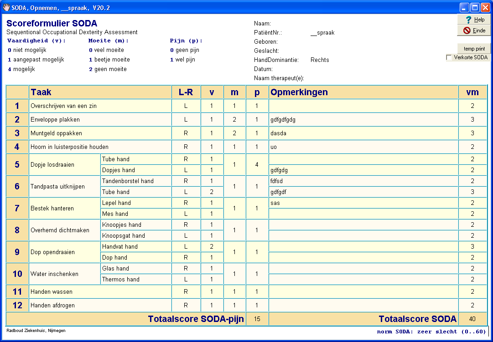

Soda
Doel van de SODA test, is het meten van handvaardigheid in het dagelijks leven door het observeren van gestandaardiseerde taken onder gecontroleerde condities. De SODA is ontwikkeld voor patiënten met Reumatoïde Artritis (RA). De SODA bestaat uit 12 gestandaardiseerde taken, waarvan 6 bilateraal en 6 unilateraal uitgevoerd worden.
Enkele verwijzingen:
Sequential Occupational Dexterity Assessment (SODA) - FysioPedia
Medische boeken SODA + CD-ROM, Sequential Occupational Dexterity Assessment, 9051899238
Voorbeeld
van een ingevulde SODA test, binnen de TestOrganizer.
De Totaal scores worden on the flight berekend en zodra alle testgegevens zijn ingevuld, worden de vm-score vergeleken met de norm (rechtsonder in het plaatje). Zowel de gehele tabel als de resulterende scores kunnen worden ingevoegd in het patiënten rapport. Ook is het mogelijk een verkorte SODA af te nemen.
